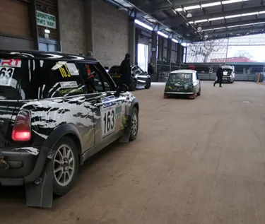
What would an ERC round in Yorkshire look like ?
It’s a pretty common opinion that UK Gravel is currently missing from International rally calendars. And While a return of WRC to Wales is looking unlikely it’s fun to hypothesise alternative events that may fit into a ERC calendar.
Based in the North of England and therefore wanting to choose stages close and familiar to myself, there’s 3 main options. Kielder, Lake District and Yorkshire. Itgetsfasternow.com wrote a great fantasy route for a WRC based in Carlisle using Kielder and Lake District. So for my ERC route I’ve gone to Yorkshire and County Durham.
Some quick notes:
- All stages have been used since 2010 but can not be certain they’d be available currently
- Timings would likely need changing for TV
- The event gives a nod to RAC rallies of the past with stately home stages as well as the majority of forests being used on RAC rallies previous
- FIA ERC rules dictate a total distance between 180-220 kilometres and no more than 4 stages between service
- Remote servicing / tyre zones may be of use on such itinerary due to distance of stages from service but hasn’t been used
Friday

Service area - Thirsk Rural Business Centre
The event is based in Thirsk, which provides easy access to main roads of A19 and A1. The base is also used for the Riponian Rally which hosted 104 cars in 2023 therefore providing enough space.
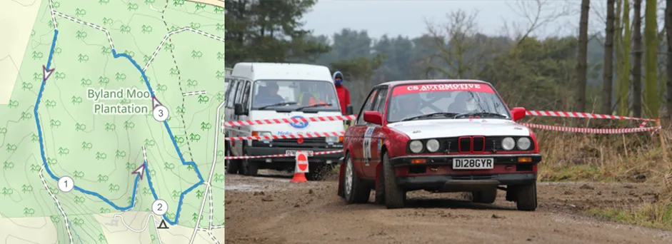
Shakedown - College Moor (3.51km)
Situated 17 km from service the College Moor stage provides a representative stage for the upcoming rally with the final third using the same mileage as a later stage in the event.
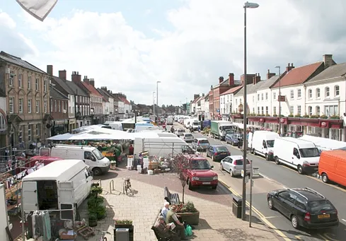
Start ramp - Northallerton Town Centre
The picturesque market square of Northallerton would provide a good location for the start with it being situated 10 miles from Thirsk in the direction of the Friday night super special stage. There is ample parking outside of the market square for spectators.
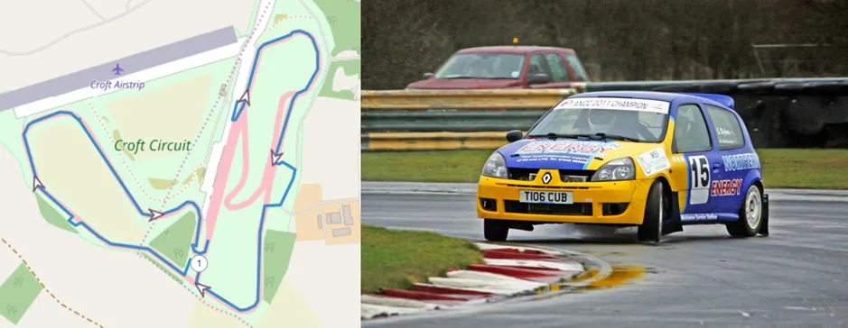
Stage 1&2 - Croft circuit (3.2km)
Croft Circuit has a rich rally history as well as ample facilities and good spectator spots for a fantastic Friday evening superspecial. The stage would mostly stick to the circuit however on Gravel tyres this could provide exciting sideways action especially exiting Hathorne Bend and Tower Bend. On the old straight they will turn square left into a tight single lane side road before rejoining the circuit. Another square diversion of the circuit before the Jim Clark esses and after. A chicane on the exit of Sunny Out and a chicane before the Hairpin slowing the cars down but also adding variety to the quick circuit.
Saturday
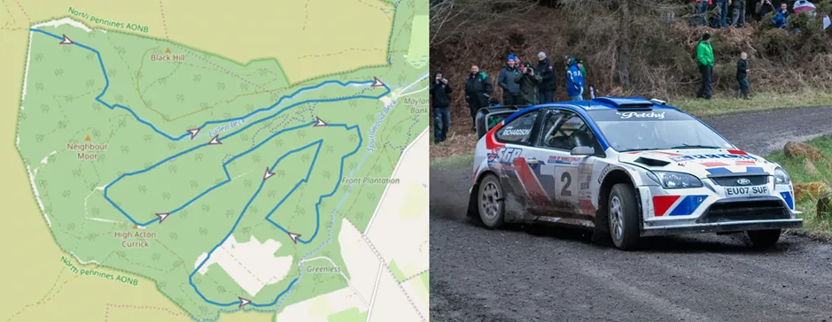
Stages 3&6 - Hamsterley (23.5km) - https://youtu.be/OQ64weFMhQY
Classic stage from RAC rallies pre 21st century. The stage transitions between fast flowing sections on compact gravel roads frequently used by logging trucks to more narrow softer roads. Large spectator numbers can be expected as seen on the 2013 Tour of Hamsterley. Stage roads could vary based on logging activity and the condition of roads with the forest not having been used regularly in rallies since 2016.
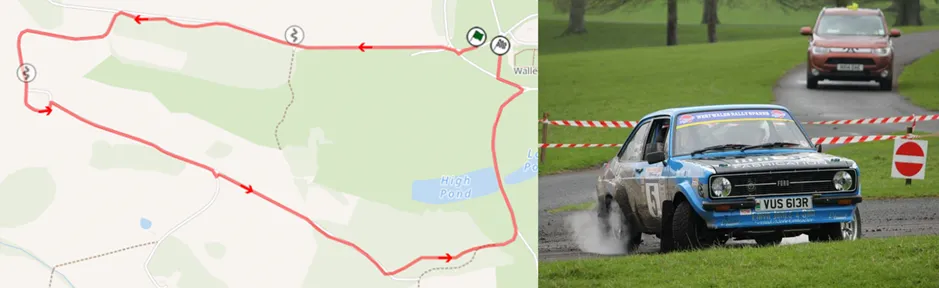
Stage 4 - Raby (4.6km) - https://youtu.be/enkZfjEGxfQ
A Stately home style stage mostly on fast tarmac narrow road with two chicanes and a tightened triangle, but including a slippery gravel/mud wooded section before reappearing in front of the castle.
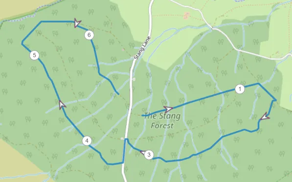
Stage 5 - Stang (6.69km)
Stang forest has not been used in rallying for over a decade after going into private ownership but previously featured in RAC Rallies in connection with Hamsterley. Closed road act could allow the East and West sides to be combined. Unfortunately little video of the stage is available but maps show the stage roads fluctuating between very fast and more twisty flowing.
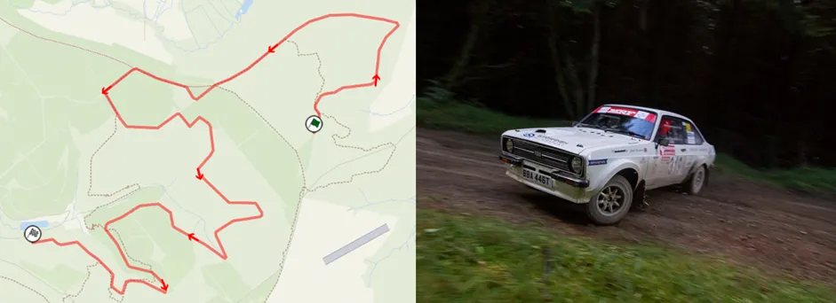
Stages 7&9 - Staindale (10.22km) - https://youtu.be/UhTnCxy-ruM
Crossing over the Dalby forest drive (Passing near Adderstone field, a possible re-group area) the event will start the Staindale stage. The stage starts fast and flowing and after an open hairpin a very fast long meandering straight before tightening between gate posts into a more angular section. The stage continues to have tight corners but more flowing towards the end of the stage. As seen in the video the stage contains crests hiding bends that can catch drivers out as well as changing surfaces during the stage.
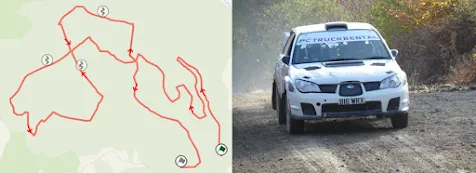
Stages 8 & 10 - Langdale (24.17km) - https://youtu.be/o8BrNxpH2tE
Starting on narrower bumpier gravel roads the stage has a fast flowing nature between the square junctions. As can be seen from the video the summer timing of the filmed event means increased foliage which can narrow the roads and reduce cutting slowing events down slightly (excusing weather). The stage widens slightly with cambered sides of the road on the northern and Western roads and features long straights with 3 bale chicanes built into laybys. Before finally the stage turns south again onto a narrower fast flowing run downhill to finish.
Sunday
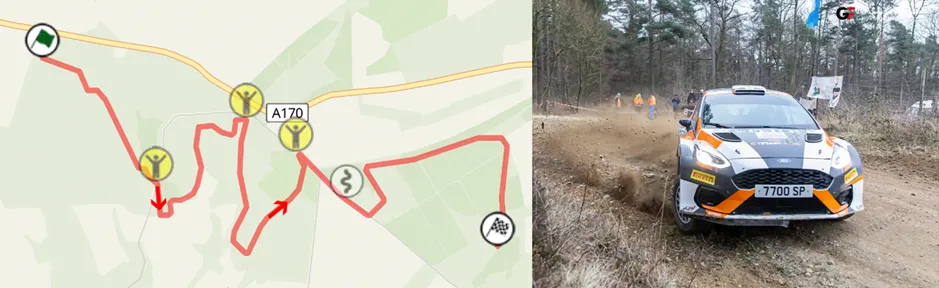
Stages 11&15 - Wass Moor (8.72km) - https://youtu.be/admgvec3rvo
An example of a forest stage improved with the closed road act, Riponian Rally’s Wass Moor combines the Wass Moor, College Moor and Pry Rigg stages into one through short tarmac sections. The stages switch between angular sections and fast flowing and has always been hugely popular with fans due to the forest roads running so close to a main road.
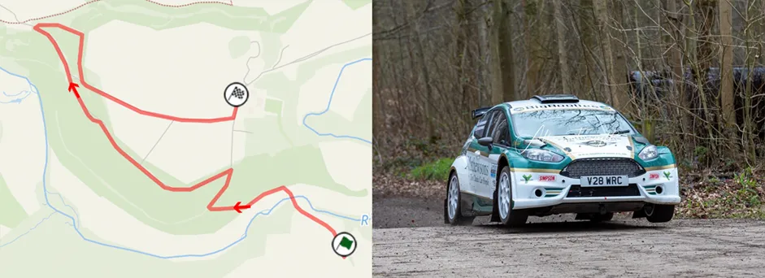
Stage 12 - Duncombe Park (4.51km) - https://youtu.be/c8JsODg1Bkg
This spectator stage switches between concrete and gravel running mostly through the woods before opening up into open parkland with a chicane before a Square left into the finish. Recently used as part of a rally show event the grounds are large enough to host thousands of spectators and activities.
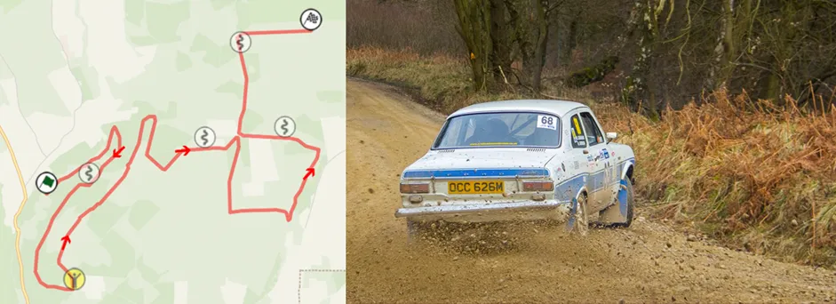
Cropton (14.79km) - https://youtu.be/fT_-6CZgqPY
A fast stage starting off with an uphill climb that naturally twists its way up the hill, the stage features a lot of difficult blind sharp turns after long straights. The second half of the stage involves more junctions with the added difficulty of gate posts lining the road. Hay bale chicanes have been added to the stage to reduce average speed on UK national events.
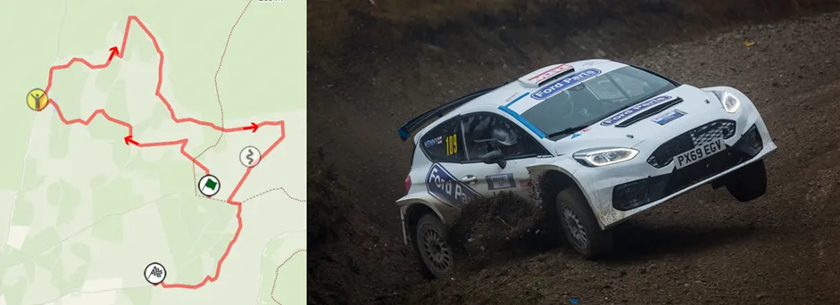
Stage 14&17 Gale Rigg (11.68km) - https://youtu.be/xow7Xcl9tKo
Another fast stage needing big commitment over crests, high geared corners and braking zones to be quick. This stage used on the Riponian Rally utilises a closed road to extend the mileage of the stage. The stage features one hay bale chicane on a particularly long straight as well as a “natural” chicane built into the side of a road. The closed road section provides large moorland space for spectators, especially useful with being the event power stage.
Event schedule
Itinerary statistics:
Total event: 823.06 km
Total stage: 208.36 km
Total liaison: 614.7 km
Stage distance (km)
Liaison distance to (km)
Time of first car
Friday
Shakedown College Moor
3.51
Northallerton Start
18:00
SS1 Croft
3.2
19.3
18:24
SS2 Croft
3.2
0.5
18:29
Service - 30 Minutes
35.3
19:06
Overnight Parc Ferme
19:06
Friday total
6.4
55.1
Saturday
Parc Ferme Out
08:00
SS3 Hamsterley
23.5
94.4
09:20
SS4 Raby
4.6
13.9
09:53
SS5 Stang
6.69
22.2
10:26
SS6 Hamsterley 2
23.5
30.3
11:08
Service - 60 minutes
83.4
12:25
Service out
13:25
SS7 Staindale
10.22
66.1
14:35
SS8 Langdale
24.17
11.1
15:03
Regroup 20 minutes
3.7
15:26
SS9 Staindale 2
10.22
1
15:51
SS10 Langdale 2
24.17
11.1
16:18
Service 60 minutes
67.7
17:46
Overnight Parc Ferme
18:46
Saturday total
127.07
404.9
Sunday
Parc Ferme Out
08:00
SS11 Wass Moor
8.72
14.8
08:18
SS12 Duncombe Park
4.51
6
08:35
SS13 Cropton
14.79
25.5
09:07
SS14 Gale Rigg
11.68
4.6
09:27
Service - 60 minutes
52.8
10:33
Service out
11:33
SS15 Wass Moor 2
8.72
14.8
11:51
SS16 Cropton 2
14.79
31.6
12:33
SS17 Gale Rigg 2
11.68
4.6
12:53
Sunday total
74.89
154.7


Comments